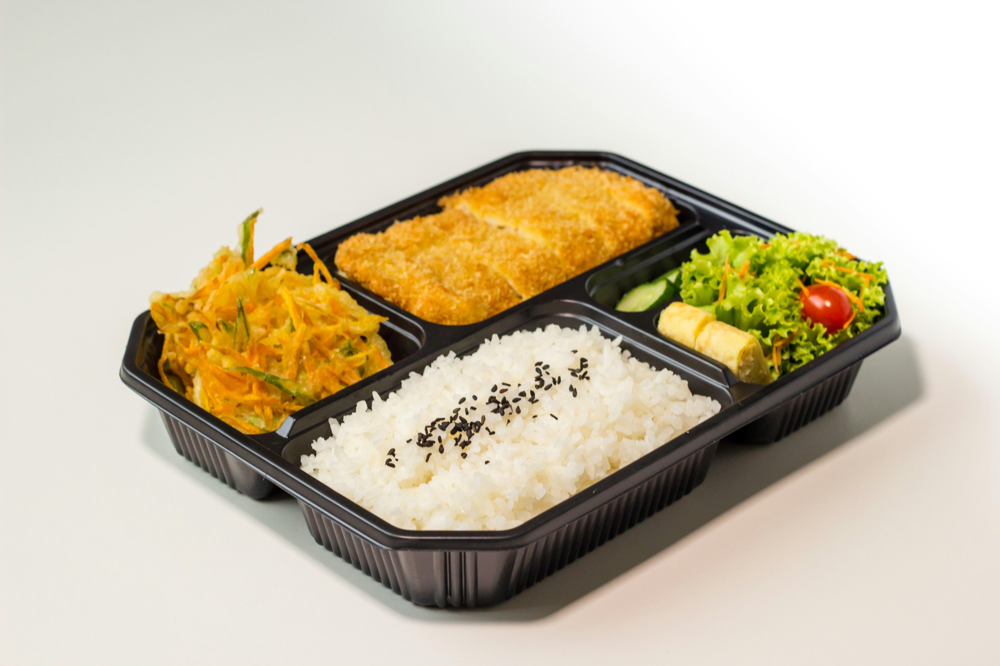

Usual lunch

Description
A very straightforward dish that allows some variety
Ingredients
- Any frozen ready-to-fry meat
- Pasta or buckwheat or rice or anything else as a side to your meat
- Oil for the pan
- Salt
Steps
- Prepare your meat, the steps are on the package
- Prepare your side meal, the steps are on the package
- Optionally, add salt while making all this
- Put everything on the plate and it's done